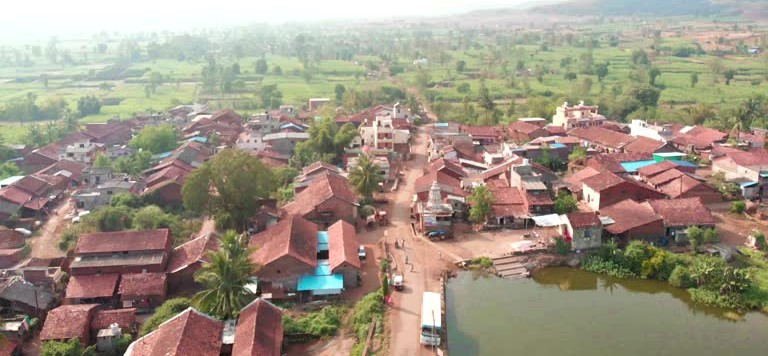

ग्रामपंचायत सिंदुर
"उन्नत शेती, उन्नत गाव - प्रगतिशील सिंदुर"

ग्रामपंचायत सिंदुर
"उन्नत शेती, उन्नत गाव - प्रगतिशील सिंदुर"

ग्रामपंचायत सिंदुर
"उन्नत शेती, उन्नत गाव - प्रगतिशील सिंदुर"
"उन्नत शेती, उन्नत गाव - प्रगतिशील सिंदुर"
"उन्नत शेती, उन्नत गाव - प्रगतिशील सिंदुर"
"उन्नत शेती, उन्नत गाव - प्रगतिशील सिंदुर"

कस्तुरी अण्णाप्पा बिरादार
8600223559
महादेवी लक्ष्मन मेंडीगेरी
7709972110
राजेंद्र काडप्पा माळी
8390322257

गरिबीमुक्त गाव

आरोग्यदायी गाव

बालस्नेही गाव

जलसमृद्ध गाव

स्वच्छ व हरित गाव

पायाभूत सुविधांनीयुक्त
स्वयंपूर्ण गाव

सामाजिक न्याय व स्वयंपूर्ण गाव

सुशासनयुक्त गाव

महिला स्नेही गाव